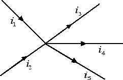
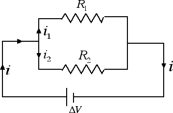

Corrente elettrica
Resistori in parallelo
Nella precedente sezione abbiamo visto che ogni conduttore è caratterizzato da una sua resistenza R. Un componente elettrico che soddisfa la prima legge di Ohm prende anche il nome di resistore. I resistori (spesso denotati semplicemente con il nome della grandezza fisica che li caratterizza, ossia resistenze) sono il secondo utilizzatore che entra nei circuiti elettrici, a fianco dei condensatori. Entrambi sono considerati elementi passivi di un circuito, dal momento che accumulano o dissipano energia elettrica, a differenza dei generatori che sono invece definiti elementi attivi poiché forniscono energia al circuito elettrico. Il simbolo con cui si indica un resistore in un circuito è . Come i condensatori, anche i resistori possono essere collegate tra loro in serie o in parallelo. In questa sezione cominciamo ad analizzare il collegamento di due resistori in parallelo.
Per poter analizzare il collegamento di resistenze in parallelo dobbiamo preliminarmente enunciare il primo principio di Kirchoff. Consideriamo un nodo di un circuito, ossia un punto nel quale convergono più conduttori, come nella figura sottostante.

Il primo principio di Kirchoff afferma che la somma delle correnti che entrano in un nodo è uguale alla somma delle correnti che escono dal nodo: i1 + i2 = i3 + i4 + i5. Il primo principio di Kirchoff è una diretta conseguenza del principio di conservazione della carica elettrica, in base al quale in un certo intervallo di tempo la carica elettrica che entra in un nodo del circuito deve essere uguale alla carica elettrica che esce.
Abbiamo ora tutti gli elementi per studiare il collegamento dei resistori in parallelo. Supponiamo di avere due resistenze collegate in parallelo come nella figura seguente:

Applicando il primo principio di Kirchoff abbiamo che la corrente i che entra nel nodo è uguale alla somma delle correnti che ne escono: i = i1 + i2. Si definisce resistenza equivalente quella resistenza che, sostituita al posto delle due resistenze in parallelo, produce nel circuito elettrico lo stesso effetto. Per trovare la resistenza equivalente è importante notare come la differenza di potenziale ai capi delle due resistenze in parallelo è la stessa ed è uguale alla differenza di potenziale ΔV fornita dal generatore. Applicando il primo principio di Kirchoff possiamo andare a calcolarci l'inverso della resistenza equivalente: 1 / Re = i / ΔV = (i1 + i2) / ΔV = i1 / ΔV + i2 / ΔV = 1 / R1 + 1 / R2. Dunque se più resistenze sono collegate in parallelo si sommano gli inversi delle resistenze. La potenza assorbita è invece uguale alla somma delle potenze assorbite: P = i · ΔV = (i1 + i2) ΔV = P1 + P2.
L'importanza del collegamento in parallelo sta nel fatto che il circuito elettrico presente nelle nostre case è un circuito in parallelo: quando accendiamo un elettrodomestico andiamo ad aggiungere una resistenza in parallelo, la resistenza equivalente del circuito diminuisce e in questo modo viene assorbita una quantità maggiore di corrente.